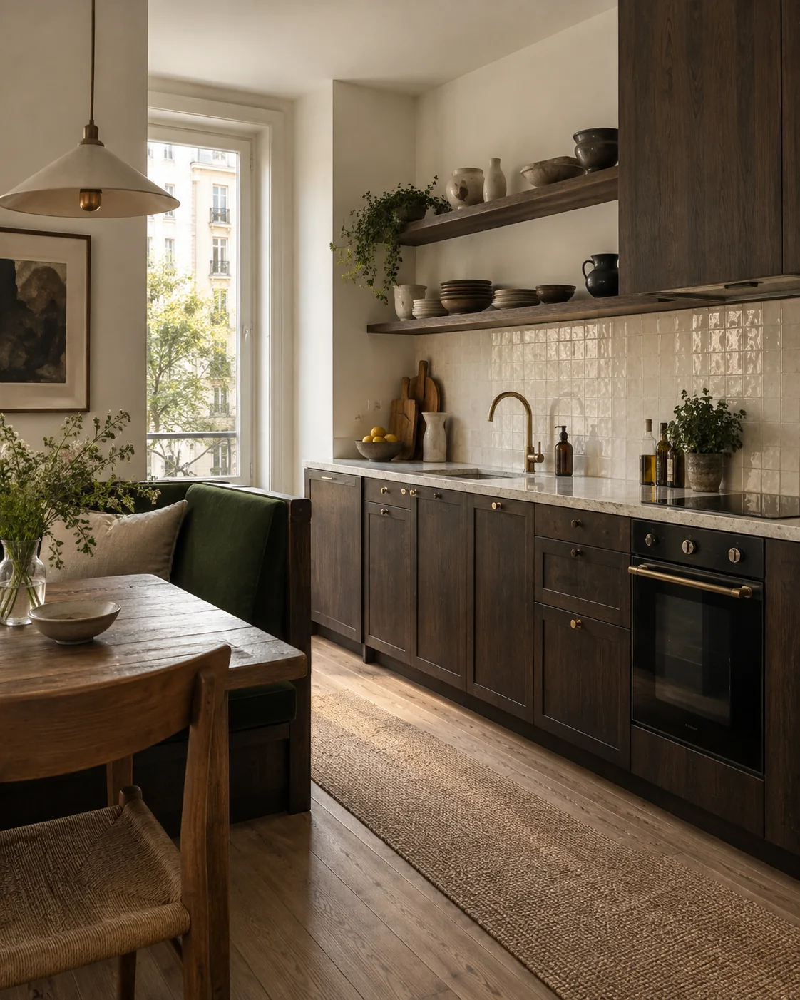

ROUND / Portfolio / 01
Casa Arco
Residenziale · Concept visivo
Una casa che trova il proprio ritmo.
L'idea / 01
La materia crea continuità.
Un interno unitario, dove la cucina e la zona giorno dialogano senza perdere intimità. Il legno accompagna i gesti quotidiani; tagli di luce e volumi essenziali danno calma agli ambienti.
Immagini e racconto dimostrativi, in attesa dei lavori reali confermati dallo studio.

Spazio, luce e materia nella stessa direzione.


ROUND / Atmosfera
Il progetto segue il ritmo della vita, non il contrario.
Continua a esplorare